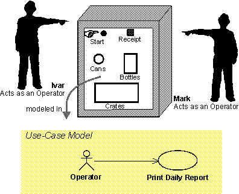
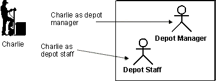
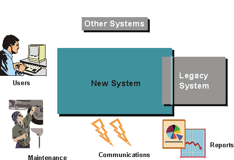
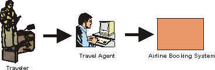
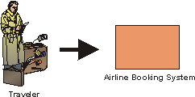

| Рекомендация: Субъект |
 |
|
| Связанные элементы |
|---|
ОбъяснениеДля того чтобы понять, как устроена система, необходимо знать, для кого она предназначена, т.е. кто будет с ней работать. Различные типы пользователей обозначаются как субъекты. Субъект - это произвольный объект, взаимодействующий с системой. Субъектом может быть пользователь, внешнее аппаратное обеспечение или другая система. Различие между субъектом и отдельным пользователем системы заключается в том, что субъект представляет определенный класс пользователей, а не фактического пользователя. Несколько пользователей могут играть одну и ту же роль, что означает, что они могут представлять один и тот же субъект. В этом случае каждого такого пользователя называют экземпляром субъекта.  Айвар и Марк - операторы машины для переработки вторсырья. Когда они работают на этой машине, каждый из них представлен экземпляром субъекта Оператор. Однако, в некоторых случаях только один сотрудник играет роль, моделируемую субъектом. Например, в небольшой системе может быть только один пользователь, играющий роль системного администратора. Один и тот же пользователь может быть представителем различных субъектов (т.е. один и тот же пользователь может играть разные роли).  Чарли обычно работает с Системой управления складом в роли Заведующего складом, но иногда он работает с ней и как обычный Грузчик. Выявление субъектов Какие из околосистемных объектов станут субъектами системы? Начните с отдельных пользователей, которые будут работать с системой. Как их можно классифицировать? Часто бывает удобно выбрать двух-трех конкретных сотрудников и подбирать субъекты в соответствии с их потребностями. Ответьте на следующие вопросы - это поможет вам правильно определить субъекты:
Различные типы околосистемных объектов будут представлены как разные субъекты:
Пример:У Системы управления складом, предназначенной для работы со складом, категории пользователей таковы: Грузчик, Кладовщик, Заведующий складом. Все эти категории играют определенные роли в системе, поэтому каждый из них должен быть представлен отдельным субъектом.
Пример:В машине для переработки вторсырья, используемой для переработки банок, бутылок и ящиков, главным субъектом является Клиент: именно для него предназначена система. Однако кто-то должен и управлять машиной. Эту роль играет субъект Оператор.
Пример:Вентиляционная система, контролирующая температуру в здании, непрерывно получает результаты измерений от расположенных в здании датчиков. Таким образом, датчик является субъектом.
Пример:Банкомат соединен с центральной системой, в которой хранится информация о банковских счетах. Центральная система, скорее всего, внешняя, поэтому она должна быть субъектом. Если вы создаете приложение, работающее через Internet, то ваши основные субъекты будут, в известном смысле, анонимными. Вы не знаете, кто они на самом деле, и не можете делать никаких предположений об уровне их подготовленности и квалификации. Несмотря на это, вы можете описать роль, которую, согласно вашим замыслам, они будут играть в вашей системе. Пример: Системы, предоставляющие информацию (например, поисковые машины), имеют дело с совершенно анонимными субъектами, которые обращаются к приложению исключительно с целью получить сведения по интересующему их вопросу. Пример: Правительственные информационные сайты, предназначение которых - предоставить любому гражданину (пользователю сети) информацию о законах, правилах, установленном порядке, формах и т.п. Например, у Американской налоговой службы есть свой Web-сайт, на котором можно найти инструкции по заполнению налоговой декларации. Это означает, что создатель сайта должен предоставить все бланки в электронном виде, а также обеспечить возможность заполнения этих бланков в Internet. Роль основного субъекта в данном случае - любое лицо, собирающееся заполнить налоговую декларацию в США. Разумеется, после заполнения декларации пользователь перестает быть анонимным. Субъекты помогают определить границы системыВыявление субъектов также означает, что вы устанавливаете границы системы, что помогает вам понять ее предназначение и сферу действия. Субъектами следует считать лишь тех, кто непосредственно взаимодействует с системой. Если добавляемых вами ролей больше, чем околосистемных объектов, то вы пытаетесь смоделировать не саму систему, а деловую ситуацию, в которой она будет использоваться. Пример:Рассмотрим систему бронирования авиабилетов. Кто будет в ней субъектом? Это зависит от того, будет ли эта система использоваться турагентом или же это будет система, к которой пассажир сможет подключаться напрямую через Internet.  Если вы создаете систему бронирования авиабилетов, предназначенную для турагента, то субъектом будет турагент. Турист не работает с системой напрямую и поэтому не является субъектом.  Если вы создаете систему бронирования авиабилетов, к которой смогут подключаться обычные пользователи через Internet, то турист будет взаимодействовать с системой напрямую и поэтому является для нее субъектом. Краткое описаниеКраткое описание субъекта должно содержать следующие сведения:
Краткое описание должно состоять максимум из нескольких предложений. Пример:В модели варианта использования машины для переработки вторсырья три субъекта кратко описываются следующим образом: Клиент: Клиент собирает у себя дома бутылки, банки и ящики, а затем сдает их в магазин, чтобы вернуть залог. Оператор: Оператор отвечает за обслуживание машины для переработки вторсырья. Руководитель: Руководитель отвечает за решение вопросов, связанных с выделением денежных средств и обслуживанием клиентов. Характеристики субъектаХарактеристики субъекта могут влиять на разработку системы, в частности, на внешний вид пользовательского интерфейса. Учтите, что если бизнес-сотрудники, соответствующие субъектам, уже описаны в модели бизнес-объектов, то некоторые из следующих характеристик могут быть уже заданы. Характеристики субъекта перечислены ниже:
В большинстве случаев можно ограничиться грубой оценкой количества пользователей и частоты обращений. Разница между 30 и 40 не повлияет на макет пользовательского интерфейса, но разница между 3 и 30 - уже да. Далее перечислены другие характеристики субъекта:
Эти характеристики используются прежде всего при определении граничных классов и прототипа, чтобы обеспечить оптимальность пользовательского интерфейса с точки зрения сообщества пользователей. Пример:Ниже приведен пример характеристик субъекта Пользователь почты. Этот субъект, в числе прочего, взаимодействует с вариантом использования Управлять входящими почтовыми сообщениями.
|
© Copyright IBM Corp. 1987, 2006. Все права защищены.. |